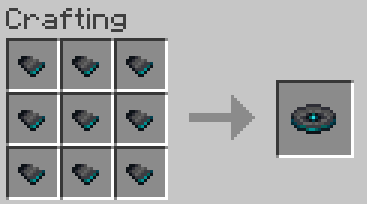

Plaatide omandamise protsess
Minecrafti muusikaplaate saab omandada mitmel erineval viisil. Ent võrreldes teiste mängus olevate esemetega, on nende hankimine keerulisem – ainult ühte muusikaplaati saab ise valmistada ning isegi selle protsess nõuab veidi vaeva ja aega. Ülejäänud plaate tuleb leida kirstudest, arheoloogilistest väljakaevamistest või lasta creeperi tapmisel loota, et seda teeb sinu eest luukere oma vibuga.
*Plaatide omandamise protsess on ainult keeruline Minecrafti Survival mängurežiimis. Creative mängurežiimis saab lihtsalt endale anda need plaadid, kas olemasolevast esemete menüüst või kasutades mängu käske.
1. Crafting ehk valmistamine
Muusikaplaat “5” on ainuke plaat, mida saab ise endale valmistada kasutades töölaua (Workbench) plokki. Valmistamiseks on vaja leida plaadi killud, mille leiab maa all olevatest iidsetest linnadest.
2. Leidmine aardekirstudest
Kirstud, mis tekivad maailmasse juhuslikku genereerimisel abil ise tekkinud ehitistes nagu “Ancient City”, “Dungeon”, “Stronghold”, “Woodland Mansion” ja “Bastion remnant” võivad sisaldavad neid järgnevaid plaate: “13”, “cat”, “otherside” ja “Pigstep”. “Pigstep” on ainult võimalik leida “Bastion remnant” ehitisest, mis asub “Nether”-i maailmas

3. Arheoloogia teel
Leides kui puhastades kahtlast kruusa/liiva (suspicious gravel/sand) harjaga “Trail Ruins” ehitistes. Selle meetodiga on võimalik ainult leida ühte muusikaplaati, mis oleks siis “Relic”.
4. Mobi saadustest
Kui luukere või üks luukere variantidest tapab Creeper koletise oma vibu ja noolega, viskab Creeper peale oma surma maha ühe suvalise muusikaplaadi antud kollektsioonist (Kõik muusikaplaadid peale "Pigstep", "otherside", "5" ja "Relic"). Isegi kui luukere vibu lasu põhjusel sütib dünamiidi plokk ning selle tagajärjel Creeper sureb, pillab ka siis ühe suvalise muusika plaadi maha mängijale korjamiseks. Aga selleks juhtumiseks peab nool ise põlema.